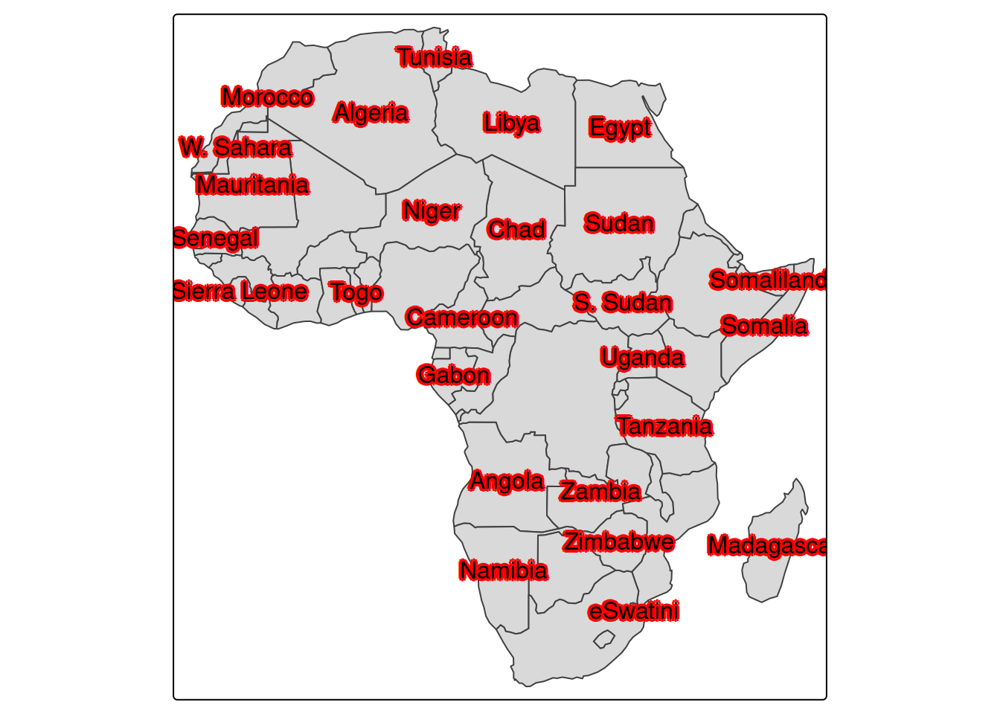
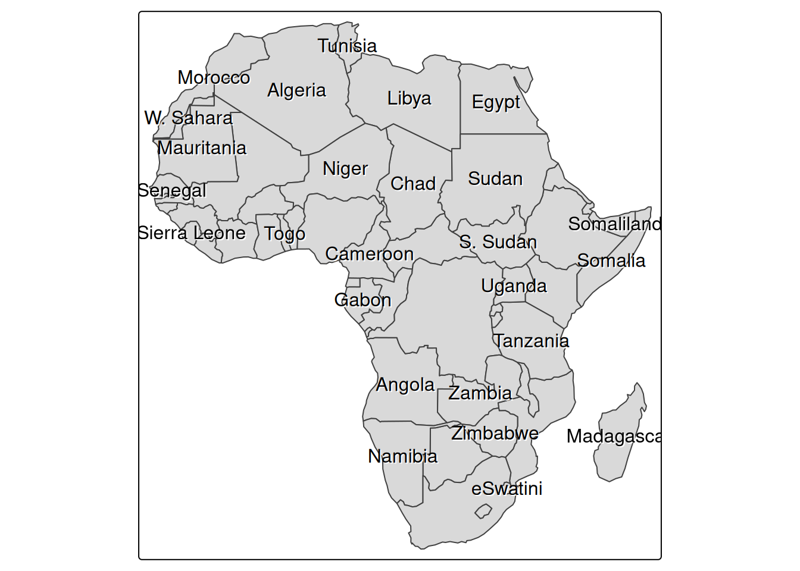
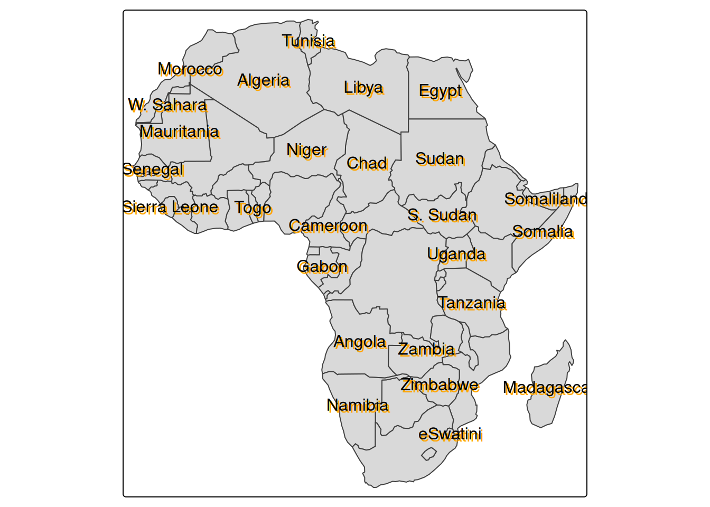

library(tmap)
packageVersion("tmap")[1] '4.3'tmapパッケージで地図の上に縁取り文字を表示する方法tmap 4.3からtm_textで文字の縁取りなどの装飾が実装されました
Rのtmapパッケージで地図の上に縁取り文字を表示する方法を紹介します。 tmapパッケージのChangelogによると、バージョン4.3からtm_text関数で文字の縁取りなどの装飾が実装されたようです。
早速試してみました。
tmapのインストール2026年4月14日時点では、まだtmapのCRAN版は4.3ではないため、開発版をインストールする必要があります。 renvを使っている場合は、以下のようにしてインストールできます。
renv::install("r-tmap/tmap")その後、library()で読み込み、バージョンを確認します。
library(tmap)
packageVersion("tmap")[1] '4.3'アジアの国名を表示してみます。 まずは、縁取りなしの場合です。
Asia <- World[World$continent == "Africa", ]
tm_shape(Asia) +
tm_polygons() +
tm_text("name")
少し重なりが多いため、remove_overlap = TRUEを指定して、重なりをなくします。 表示されなくなってしまった国には申し訳ないですが、見やすくなります。
tm_shape(Asia) +
tm_polygons() +
tm_text("name", options = opt_tm_text(remove_overlap = TRUE))これに、文字の縁取りをつけてみます。 opt_tm_textの引数で、halo = TRUEを指定します。
tm_shape(Asia) +
tm_polygons() +
tm_text("name", options = opt_tm_text(halo = TRUE, remove_overlap = TRUE))白い縁取りがついて、塗りつぶしのある地図の上でも見やすくなりました。 オプションとしては、以下のようなものがあります。
halo: 縁取りを有効にするかどうかを指定します。デフォルトはFALSEです。halo.col: 縁取りの色を指定します。デフォルトはNAです。halo.width: 縁取りの幅を指定します。デフォルトは0.05です。halo.blur: 縁取りのぼかし量を指定します。デフォルトは0です。halo.alpha: 縁取りの透明度を指定します。デフォルトは0.8です。たとえば、赤い縁取りをつけてみます。
tm_shape(Asia) +
tm_polygons() +
tm_text(
"name",
options = opt_tm_text(
halo = TRUE,
halo.col = "red",
halo.width = 0.1,
halo.blur = 0.05,
halo.alpha = 0.9,
remove_overlap = TRUE
)
)
haloでは縁取りが付きましたが、shadowオプションを使うと、文字に影をつけることもできます。
tm_shape(Asia) +
tm_polygons() +
tm_text("name", options = opt_tm_text(shadow = TRUE, remove_overlap = TRUE))
少し違いが分かりにくいですが、文字の下に影がついて、地図の上でも見やすくなります。 shadowオプションの引数は以下の通りです。
shadow: 影を有効にするかどうかを指定します。デフォルトはFALSEです。shadow.col: 影の色を指定します。デフォルトはNAです。shadow.offset.x: 影の水平方向のオフセットを指定します。デフォルトは0.05です。shadow.offset.y: 影の垂直方向のオフセットを指定します。デフォルトは0.05です。影の効果をわかりやすくするために、少し大げさに影をつけてみます。
tm_shape(Asia) +
tm_polygons() +
tm_text(
"name",
options = opt_tm_text(
shadow = TRUE,
shadow.col = "orange",
shadow.offset.x = 0.1,
shadow.offset.y = 0.1,
remove_overlap = TRUE
)
)
縁取りは文字の周りに線がつくのに対して、影は文字の下に別の文字が表示されるイメージです。 どちらも地図の上で文字を見やすくするためのオプションですが、好みや地図のデザインによって使い分けると良さそうです。